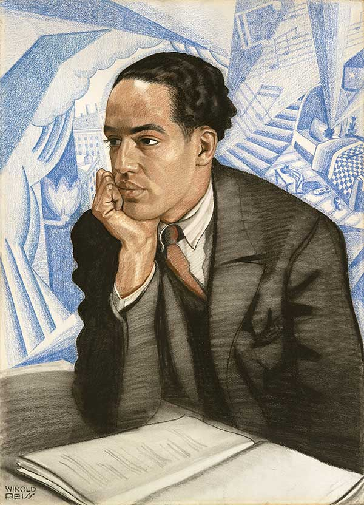

Home | Edition |
Texts | Analysis
The Ballot and Me - Semester Project
Mia Borgia

This website will soon shelter a venture in text-encoding the short typescript play The Ballot and Me by Langston Hughes.
Here we will showcase our work on transcribing the play into HTML and XSLT, and the research objectives we had in mind while coding this document.
The document type we are collecting this source from is a PDF, and it contains the Author's Copy of a typewritten play by Langston Hughes from 1956.

We are at Penn State Erie, The Behrend College.